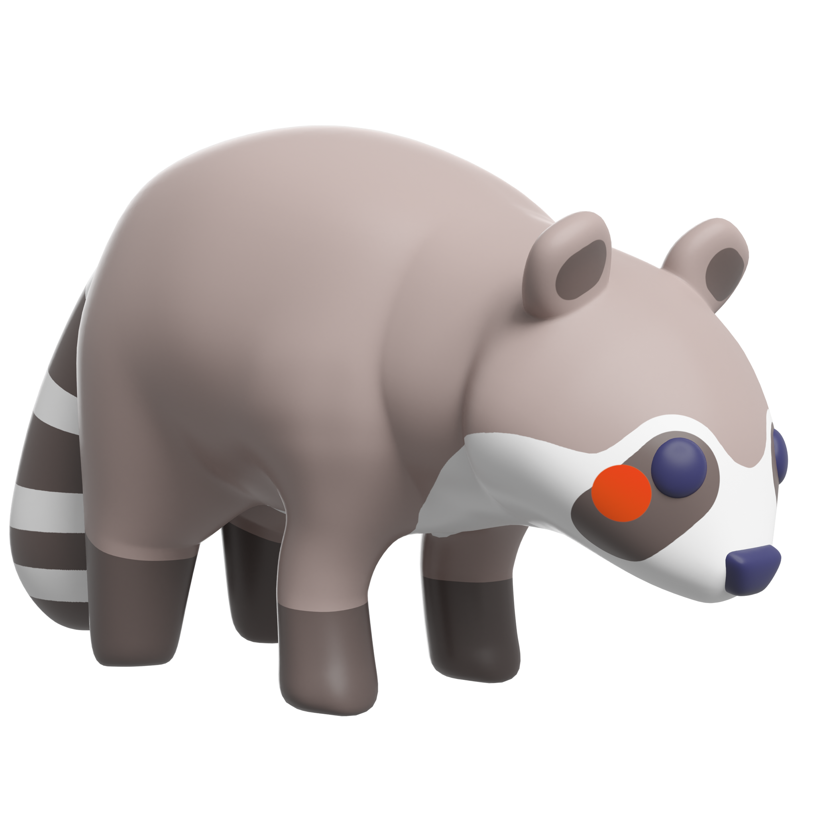

Studio Ghibli, dirigida y creada por Hayao Miyazaki en 1988. Tras realizar esta película, se

Studio Ghibli, dirigida y creada por Hayao Miyazaki en 1988. Tras realizar esta película, se
adoptó como logotipo del estudio a los Totoros. Es la tercera película del estudio tras su
fundación.